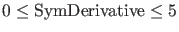
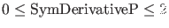

Next: Continuation and output Up: General software aspects of Previous: General software aspects of Contents
In the function fun_eval, the dynamical system is to be given, where the parameters should be listed individually. Under init, the user can define some initialization parameters, as the phase variable values, the timespan, etc. All phase variables and parameters are expected to be scalar variables, not vectors or matrices. In the further functions, it is possible to supply the symbolic derivatives of the system to various orders to increase the speed and/or improve accuracy of the algorithm. Note that for the state variables derivatives up to fifth order can be provided. For the parameters first order derivatives of fun_eval and of its state Jacobian can be provided. No other derivatives can be supplied through the system definition file, since they are never used in (CL_)MATCONT. We recall that the presence of symbolic derivatives, whenever necessary, typically will be stored in the subfields cds.options.SymDerivate and cds.options.SymDerivativeP of cds.options. This is done by the initializers to the curve description files. We note that  denotes the order of the highest symbolically available derivative with respect to state variables; similarly  denotes the order of the highest symbolically available derivative in which a derivative with respect to a parameter is involved. It is always assumed that this implies the presence of the lower order derivatives.
Finally, the odefile can contain the description of any number of user functions, i.e. functions that can be monitored along computed curves and whose zeros can be detected and located. User functions can serve many purposes; an example of a sophisticated use of user functions is given in §8.5.4.
Details and examples on the construction of the odefile of a dynamical system are given in Chapter 4.